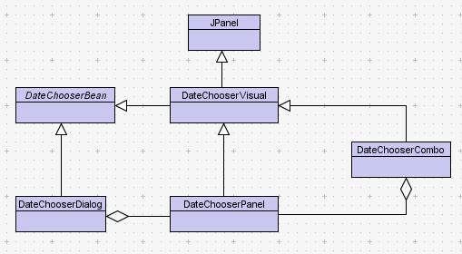

|
||||||||||
| PREV PACKAGE NEXT PACKAGE | FRAMES NO FRAMES | |||||||||
See:
Description
| Interface Summary | |
|---|---|
| BeanTableCell | Table cells editor and renderer common options. |
| DateChooserBean | Common interface for all datechooser components. |
| Class Summary | |
|---|---|
| AbstractDateChooserBeanInfo | BeanInfo class for common properties of all components. |
| BeanUtils | JavaBeans utilities. |
| DateChooserCombo | Bean "Combo date editor". |
| DateChooserComboBeanInfo | Info class for DateChooserCombo. |
| DateChooserComboCustomizer | Customizer for DateChooserCombo. |
| DateChooserDialog | Bean: dialog for date selection. |
| DateChooserDialogBeanInfo | Info class for DateChooserDialog. |
| DateChooserDialogCustomizer | Customizer for DateChooserDialog. |
| DateChooserPanel | Bean: date selection panel. |
| DateChooserPanelBeanInfo | Info class for DateChooserPanel. |
| DateChooserPanelCustomizer | Customizer for DateChooserPanel. |
| DateChooserVisual | Basic class for all visual datechooser components. |
| PermanentBean | Service class. |
Beans and service classes.
JavaBean компоненты и вспомогательные классы.

|
||||||||||
| PREV PACKAGE NEXT PACKAGE | FRAMES NO FRAMES | |||||||||